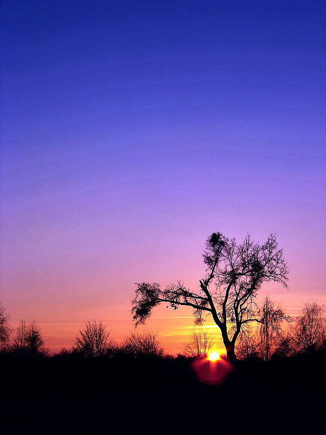

Igralište kod dva hrasta.
Inače poznata lokacija u Veliškovcima, gdje se nedjeljama skupljalo društvo u potrazi za zabavom uz malo dobrog nogometa.
Godinama su simbol "stadiona" činila upravo dva stara hrasta, no tijekom jedne jake oluje srušio se jedan. Od njega je ostalo samo deblo kao uspomena. Budući je prijetilo spontano rušenje i drugoga hrasta, odlučeno je da se i taj ukloni iz sigurnosnih razloga. Za novije generacije ostaje samo ime i poneka fotografija.
Nogometni klub takmiči se u nekoliko kategorija:
- pioniri
- juniori
- seniori
- veterani